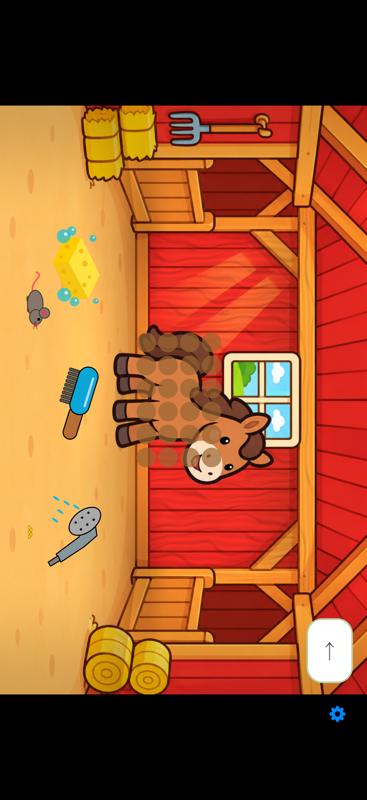
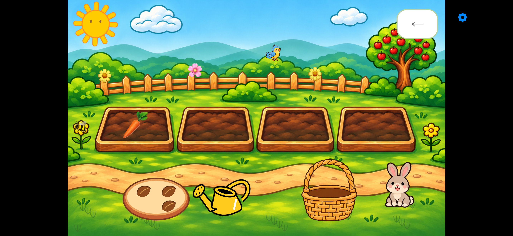
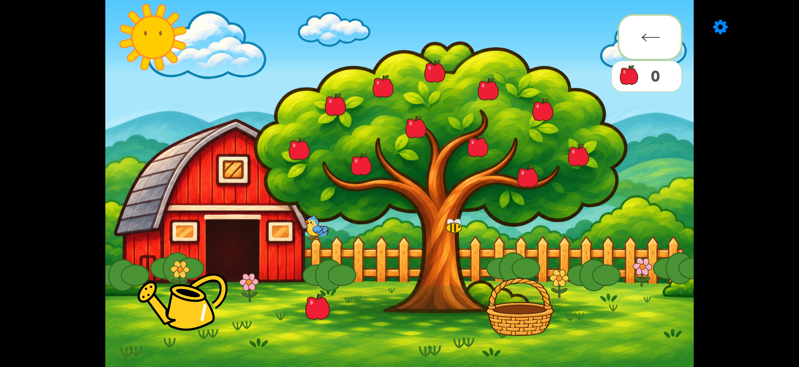

Tractor time
Drive across the field and take the hay bales to the barn.
Ages 3–5 · iPhone and iPad
Drive the tractor, feed the animals and catch apples. Explore seven farm games with Dutch voice guidance.
See the games
Drive across the field and take the hay bales to the barn.

Choose what each animal likes to eat.

Use a sponge, brush or shower to clean the animals.

Listen to the sound and tap the animal it belongs to.

Plant seeds, water them and harvest your vegetables.

Collect white or brown eggs and listen as they are counted aloud.

Move the basket under the falling apples and water the tree.
See the games in action in this animated preview.
View the game preview (GIF)
All games are ready to play. Dutch spoken prompts help your child get started.
The games work offline and contain no ads, accounts, subscriptions or in-app purchases.
Adjust voices, game effects and background sounds separately in the parent area.
The app stores sound preferences and progress for some games locally.